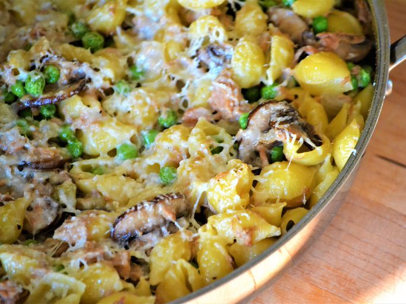

Tuna Pasta Bake

Description
A beautiful tasty and quick dish for the family. Can be made in 30 minutes.
Ingredients
- 1 pack of penna pasta
- 1 tablespoon of Filippo Berio™ Olive Oil
- 1 tablespoon of butter
- 1 onion, diced
- 3 cans of tuna, drained, flaked, deboned
- 1 cup of heavy whipping cream
- 3 packs of grated cheddar cheese
- 3 packs of grated mozzarella cheese
- ½ teaspoon of ground nutmeg
- 5 whole cloves of garlic
- salt and pepper to taste
- 1¼ cups of greated Parmesan Cheese
- 2 chillies, diced
Method
-
Preheat the oven to 350°F (175°C). Grease an oven-proof baking dish and set it aside for later. You will be putting the pasta bake into this.
-
Bring a large pot of lightly salted water to the boil (if you don't have time, then boil the water in a kettle first and have the pan heating up 5 minutes before the kettle boils). Add the penne and cook, stirring occasionally, until tender yet firm to the bite, about 11 minutes. Drain and toss the pasta with Filippo Berio͊ Olive Oil.
-
While the pasta is cooking, melt butter in a large pan over a medium heat. Add the onion, stirring frequently until soft and translucent, about 5 minutes. Add the tuna, garlic, chilli, mozzarella and cheddar cheese and cook for 2 minutes. Pour in the heavy cream; season with nutmeg, salt, and pepper. Add the penne and toss well. Transfer to the baking dish that we prepared earlier and cover it with parmesan cheese.
-
Bake in the preheated oven for 15-20 minutes or until the top is golden brown.
-
Leave for a 1 minute
-
Serve with salad with Balsamic vinegar drizzled over it.
Buon appetito